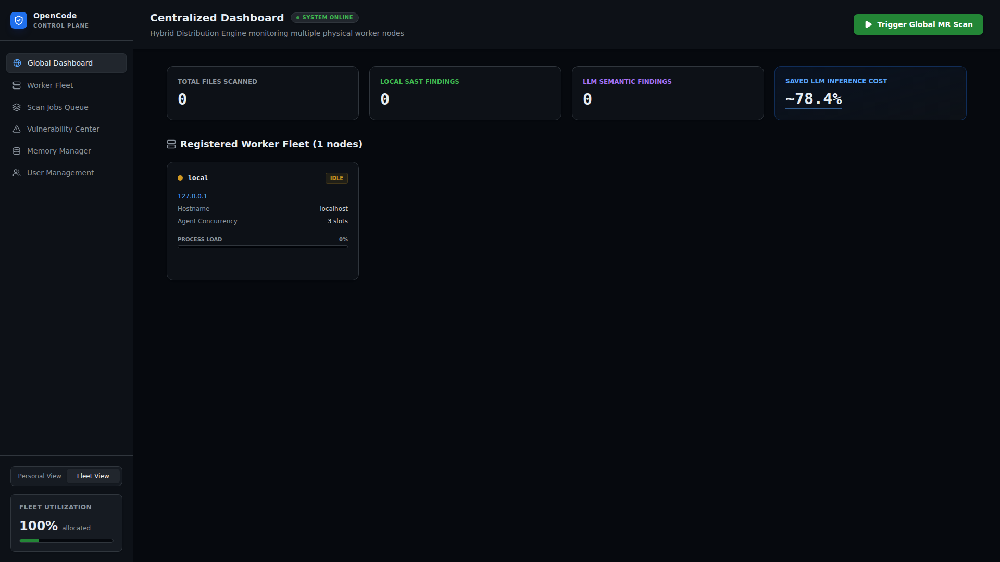
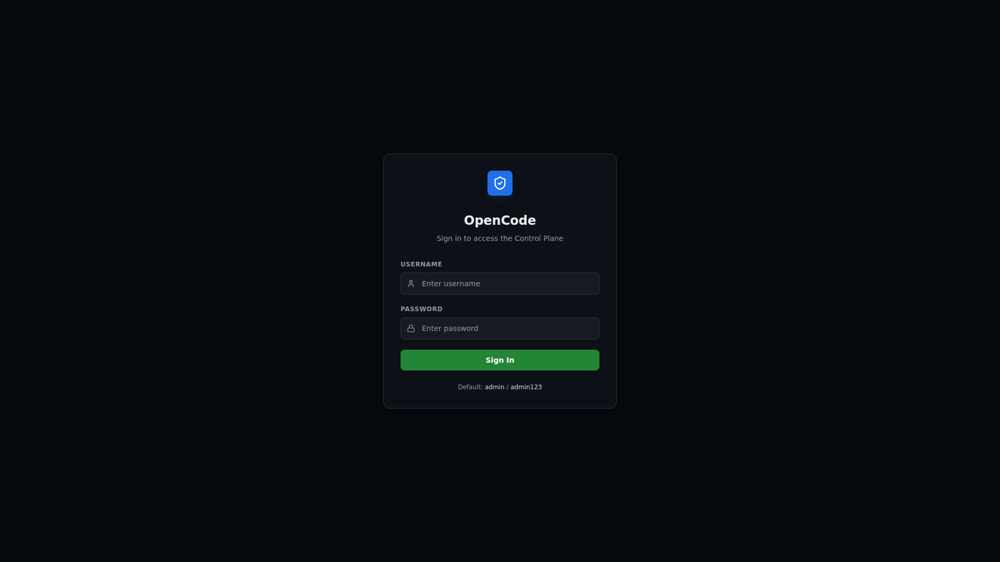
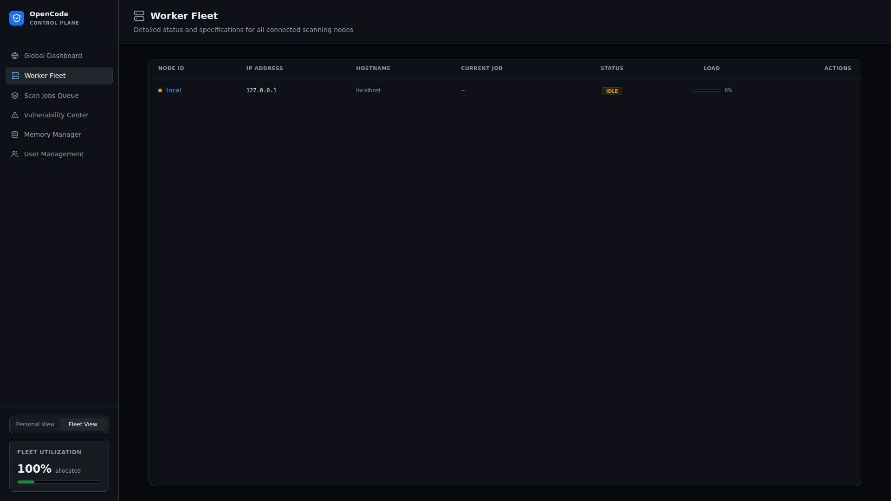
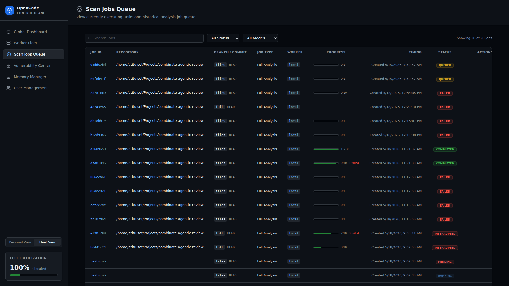
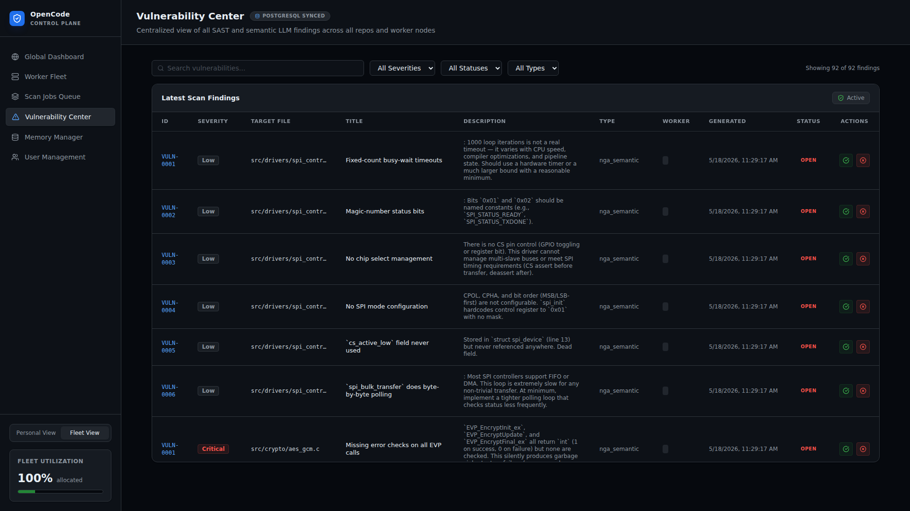
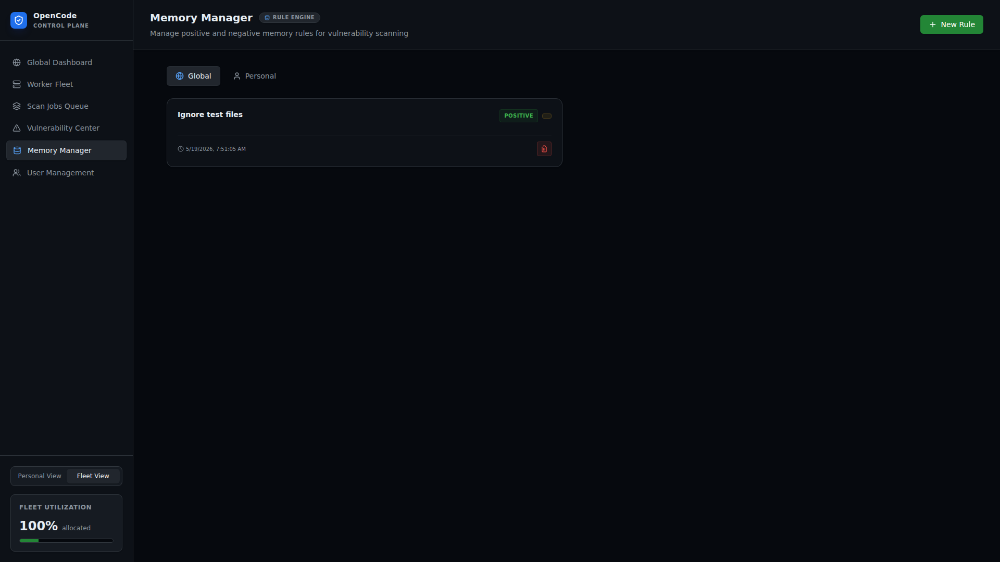
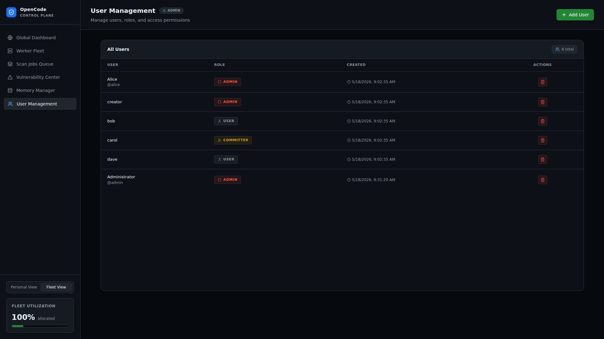
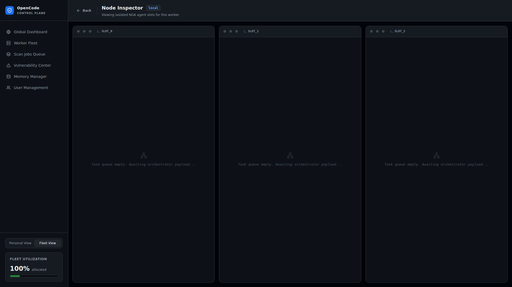

Combinate Agentic Review
企业级 C/C++ 仓库 AI 自动化代码审计平台

项目定位
Combinate Agentic Review 是一个融合了两个先前项目的 AI 代码审计平台：
- Agentic-C-CPP-CodeReview — React 仪表盘，用于展示代码审计结果
- event-loop-agent — Python 扫描引擎，使用
nga(OpenCode Agent) CLI 对 C/C++ 仓库进行并行逐文件 AI 代码审计
用户触发扫描后，系统以 3 个并发槽位并行运行 nga 对每个文件进行 AI 审计，漏洞从 Markdown 报告中解析，并提供完整的接受/拒绝工作流以及 Memory Rule 知识库反馈到后续扫描中。
核心特性
- 分布式 Worker 集群 — 支持本地内嵌 Worker 和独立远程 Worker 节点
- 实时 SSE 日志流 — 扫描过程实时推送至浏览器
- 漏洞生命周期管理 — 接受/拒绝/分配，自动生成 Memory Rule
- Memory Rule 知识库 — 正向（聚焦）与负向（忽略）规则，个人/全局级别
- 基于角色的访问控制 — admin / committer / user 三级权限
- 定时调度扫描 — APScheduler 支持 cron 表达式每日定时扫描
- Git 增量扫描 — 基于 commit diff 的增量审计，节省 LLM 推理成本约 78.4%
技术栈
| 层 | 技术 |
|---|---|
| 后端 | FastAPI + SQLAlchemy + SQLite + Redis |
| 前端 | Vite + React 19 + TypeScript + Tailwind CSS |
| Worker | Python 编排器 + nga CLI 子进程 |
| 基础设施 | Docker Compose (Redis + App) |
快速开始
前置条件
- Python 3.12+
- Node.js 22+
- Redis 7+
ngaCLI (OpenCode Agent)
本地开发
1. 启动 Redis
redis-server --daemonize yes
2. 安装后端依赖
pip install -r requirements.txt
3. 构建前端
cd frontend
npm install
npm run build
cd ..
4. 启动应用
PYTHONPATH=. uvicorn backend.main:app --host 0.0.0.0 --port 8000
应用启动后：
- 自动创建数据库表并 seed 默认管理员账户
- 启动调度器（APScheduler）
- 启动本地 Worker 循环（Redis BRPOP 消费者）
- 在
http://localhost:8000提供前端静态文件服务
5. 登录
访问 http://localhost:8000，使用默认凭据：
| 用户名 | 密码 |
|---|---|
| admin | admin123 |

Docker 部署
docker compose up --build
详见 Docker 部署 章节。
独立 Worker 节点
在远程机器上运行：
python3 worker_node.py
Worker 会自动向 Gateway API 注册，通过 Redis 消费作业，并定期发送心跳。
系统架构
Combinate Agentic Review 的系统架构设计，涵盖整体架构、数据流、数据库模型和认证授权机制。
请从左侧导航选择具体章节：
- 整体架构 — 系统全景、关键设计决策、双 Worker 架构
- 数据流 — 作业生命周期、SSE 通道、漏洞处理流程
- 数据库模型 — ER 图、模型详情、字段说明
- 认证与授权 — JWT 机制、角色体系、权限矩阵
整体架构
系统全景
Combinate Agentic Review 采用前后端分离 + 分布式 Worker 的架构：
┌─────────────────────────────────────────────────────────┐
│ Browser (React SPA) │
│ ┌──────┐ ┌──────────┐ ┌────────┐ ┌──────┐ ┌────────┐ │
│ │Dash- │ │Worker │ │Scan │ │Vuln │ │Memory │ │
│ │board │ │Fleet │ │Jobs │ │Center│ │Manager │ │
│ └──┬───┘ └────┬─────┘ └───┬────┘ └──┬───┘ └───┬────┘ │
│ └──────────┴───────────┴─────────┴─────────┘ │
│ REST API + SSE │
└────────────────────────┬────────────────────────────────┘
│
┌────────────────────────▼────────────────────────────────┐
│ FastAPI Gateway │
│ ┌─────────┐ ┌─────────┐ ┌────────┐ ┌───────────────┐ │
│ │Auth │ │Jobs │ │Slots │ │Vulnerabilities│ │
│ │Router │ │Router │ │Router │ │Router │ │
│ ├─────────┤ ├─────────┤ ├────────┤ ├───────────────┤ │
│ │Users │ │Workers │ │Memory │ │SSE / Reports │ │
│ │Router │ │Router │ │Router │ │Router │ │
│ └─────────┘ └─────────┘ └────────┘ └───────────────┘ │
│ │
│ ┌──────────────────┐ ┌───────────────────────────┐ │
│ │ SQLAlchemy ORM │ │ Redis Client │ │
│ │ (SQLite) │ │ (Pub/Sub + Job Queue) │ │
│ └──────────────────┘ └───────────┬───────────────┘ │
└────────────────────────────────────┬────────────────────┘
│
┌────────────────▼────────────────┐
│ Redis Server │
│ ┌──────────┐ ┌─────────────┐ │
│ │Pub/Sub │ │Job Queue │ │
│ │(logs/meta│ │(BRPOP/LPUSH)│ │
│ └──────────┘ └─────────────┘ │
└────────────────┬───────────────┘
│
┌──────────────────────────┼──────────────────────────┐
│ │ │
┌─────────▼──────────┐ ┌───────────▼─────────┐ ┌────────────▼───────┐
│ Local Worker Loop │ │ Worker Node A │ │ Worker Node B │
│ (in-process) │ │ (worker_node.py) │ │ (worker_node.py) │
│ │ │ │ │ │
│ ┌──────────────┐ │ │ ┌──────────────┐ │ │ ┌──────────────┐ │
│ │ Orchestrator │ │ │ │ Orchestrator │ │ │ │ Orchestrator │ │
│ │ (nga CLI) │ │ │ │ (nga CLI) │ │ │ │ (nga CLI) │ │
│ │ 3 slots │ │ │ │ 3 slots │ │ │ │ 3 slots │ │
│ └──────────────┘ │ │ └──────────────┘ │ │ └──────────────┘ │
└────────────────────┘ └─────────────────────┘ └────────────────────┘
关键设计决策
双 Worker 架构
系统支持两种 Worker 模式：
- Local Worker Loop — 内嵌在 FastAPI 进程中，通过
backend/services/worker.py的worker_loop()函数实现，直接从 Redis 队列消费作业 - Standalone Worker Node — 通过
worker_node.py独立运行，通过 HTTP API 注册、发送心跳，通过 Redis 消费作业
两种 Worker 共享相同的 Orchestrator 子进程调用逻辑，确保行为一致。
Slot 并发模型
每个 Worker 拥有 3 个并发槽位（可配置），通过内存中的 worker_slots 字典管理：
acquire— 占用槽位push— 推送日志/元数据status— 查询状态release— 释放槽位
SSE 实时推送
Orchestrator 子进程的输出通过以下链路实时推送至浏览器：
Orchestrator stdout → POST /api/slot/{id}/push → Redis PUBLISH → SSE handler → browser EventSource
数据流
作业生命周期
一个扫描作业从创建到完成的完整数据流：
用户触发扫描
│
▼
POST /api/jobs ──────────► FastAPI Jobs Router
│ │
│ ▼
│ 创建 Job 记录 (DB)
│ 为每个 C/C++ 文件创建 Task 记录
│ │
│ ▼
│ Redis LPUSH → job_queue
│
▼
Worker (BRPOP job_queue)
│
▼
Orchestrator 子进程启动
│
├──► 对每个文件执行: nga run '<prompt>'
│ │
│ ├──► stdout → POST /api/slot/{slot}/push
│ │ │
│ │ ▼
│ │ Redis PUBLISH → channel:worker_{id}_slot_{n}
│ │ │
│ │ ▼
│ │ SSE handler → browser EventSource
│ │
│ └──► 生成 .md 报告到 reports/{timestamp}/
│
▼
扫描完成
│
├──► 解析漏洞报告 (report_parser.py)
│ │
│ ▼
│ 创建 Vulnerability 记录 (DB)
│
├──► 更新 Job 状态 → completed (DB)
│
└──► 释放 Slot
SSE 通道
系统支持两种 SSE 通道：
| 通道 | URL | 用途 |
|---|---|---|
| Legacy | GET /api/sse/{slot_id} | 兼容旧版单 Worker 架构 |
| Worker-specific | GET /api/sse/worker/{worker_id}/{slot_id} | 多 Worker 架构，每个 Worker 有独立通道 |
前端在 NodeDetail 组件中为每个活跃 Slot 建立 EventSource 连接，实时渲染 ANSI 格式的日志输出。
漏洞处理流程
扫描完成 → 报告解析 → Vulnerability (open)
│
┌─────────────┼─────────────┐
▼ ▼
Accept Reject
│ │
▼ ▼
MemoryRule (positive, MemoryRule (negative,
pending approval) auto-active)
│
▼
Committer+ 审批
│ │
▼ ▼
approved rejected
- Accept — 自动创建正向 Memory Rule（聚焦此类问题），需 committer+ 审批后生效
- Reject — 自动创建负向 Memory Rule（忽略此类误报），创建即生效
Git 增量扫描流程
POST /api/jobs/{id}/git-sync
│
▼
获取 HEAD commit hash
│
▼
对比上次扫描的 commit → get_changes_since()
│
▼
获取变更文件列表 + diff
│
▼
仅扫描变更的 C/C++ 文件
│
▼
节省约 78.4% 的 LLM 推理成本
数据库模型
系统使用 SQLAlchemy ORM + SQLite，所有模型定义在 backend/models/orm.py。
ER 图
┌──────────────┐ ┌──────────────┐ ┌──────────────────┐
│ User │ │ Job │ │ Task │
├──────────────┤ ├──────────────┤ ├──────────────────┤
│ id (PK) │ │ id (PK) │ │ id (PK) │
│ username │ │ worker_id FK │ │ job_id (FK) │
│ password_hash│ │ repo_path │ │ filename │
│ role │ │ status │ │ status │
│ created_at │ │ created_at │ │ started_at │
│ │ │ completed_at │ │ completed_at │
└──────────────┘ │ commit_hash │ │ report_path │
└──────┬───────┘ └──────────────────┘
│
│ 1:N
│
┌──────▼───────┐
│ Worker │
├──────────────┤
│ id (PK) │
│ hostname │
│ ip_address │
│ slots_count │
│ status │
│ last_heartbeat│
└──────────────┘
┌──────────────────────┐ ┌──────────────────────┐
│ Vulnerability │ │ MemoryRule │
├──────────────────────┤ ├──────────────────────┤
│ id (PK) │ │ id (PK) │
│ job_id (FK) │ │ title │
│ task_id (FK) │ │ description │
│ title │ │ rule_type │
│ description │ │ category │ positive / negative
│ severity │ │ scope │ personal / global
│ status │ │ created_by (FK→User) │
│ assigned_to (FK→User)│ │ approved_by (FK→User)│
│ created_by (FK→User) │ │ status │ pending / approved / rejected
│ file_path │ │ created_at │
│ line_number │ └──────────────────────┘
│ created_at │
└──────────────────────┘
┌──────────────────────┐ ┌──────────────────────┐
│ SchedulerConfig │ │ WorkerScheduleConfig │
├──────────────────────┤ ├──────────────────────┤
│ id (PK) │ │ id (PK) │
│ worker_id (FK) │ │ worker_id (FK) │
│ cron_expression │ │ enabled │
│ enabled │ │ cron_expression │
│ repo_path │ │ repo_path │
└──────────────────────┘ └──────────────────────┘
模型详情
User
| 字段 | 类型 | 说明 |
|---|---|---|
| id | Integer (PK) | 自增主键 |
| username | String (unique) | 用户名 |
| password_hash | String | bcrypt 哈希 |
| role | String | admin / committer / user |
| created_at | DateTime | 创建时间 |
Job
| 字段 | 类型 | 说明 |
|---|---|---|
| id | Integer (PK) | 自增主键 |
| worker_id | String (FK→Worker) | 执行 Worker |
| repo_path | String | 仓库路径 |
| status | String | pending / running / completed / failed / cancelled |
| created_at | DateTime | 创建时间 |
| completed_at | DateTime | 完成时间 |
| commit_hash | String | Git commit hash |
Task
| 字段 | 类型 | 说明 |
|---|---|---|
| id | Integer (PK) | 自增主键 |
| job_id | Integer (FK→Job) | 所属作业 |
| filename | String | 扫描文件名 |
| status | String | pending / running / completed / failed |
| started_at | DateTime | 开始时间 |
| completed_at | DateTime | 完成时间 |
| report_path | String | 报告文件路径 |
Vulnerability
| 字段 | 类型 | 说明 |
|---|---|---|
| id | Integer (PK) | 自增主键 |
| job_id | Integer (FK→Job) | 来源作业 |
| task_id | Integer (FK→Task) | 来源任务 |
| title | String | 漏洞标题 |
| description | Text | 漏洞描述 |
| severity | String | critical / high / medium / low / info |
| status | String | open / accepted / rejected / assigned |
| assigned_to | Integer (FK→User) | 分配给 |
| created_by | Integer (FK→User) | 创建者 |
| file_path | String | 文件路径 |
| line_number | Integer | 行号 |
| created_at | DateTime | 创建时间 |
MemoryRule
| 字段 | 类型 | 说明 |
|---|---|---|
| id | Integer (PK) | 自增主键 |
| title | String | 规则标题 |
| description | Text | 规则描述 |
| rule_type | String | positive / negative |
| category | String | 分类 |
| scope | String | personal / global |
| created_by | Integer (FK→User) | 创建者 |
| approved_by | Integer (FK→User) | 审批者 |
| status | String | pending / approved / rejected |
| created_at | DateTime | 创建时间 |
认证与授权
认证机制
系统使用 JWT (HS256) + bcrypt 进行认证：
- 用户通过
POST /api/auth/login提交用户名和密码 - 服务端使用 bcrypt 验证密码哈希
- 验证通过后签发 JWT Token（有效期 7 天）
- 前端将 Token 存储在
localStorage中 - 后续请求通过
Authorization: Bearer <token>头携带
JWT Token 结构
{
"sub": "admin",
"role": "admin",
"exp": 1748000000
}
关键函数
| 函数 | 位置 | 说明 |
|---|---|---|
hash_password() | backend/services/auth_service.py | bcrypt 哈希 |
verify_password() | backend/services/auth_service.py | bcrypt 验证 |
create_access_token() | backend/services/auth_service.py | JWT 签发 |
decode_token() | backend/services/auth_service.py | JWT 解码验证 |
get_current_user() | backend/routers/auth.py | FastAPI 依赖，从 Bearer Token 解析用户 |
require_role() | backend/routers/auth.py | FastAPI 依赖，角色校验工厂函数 |
角色体系
| 角色 | 权限 |
|---|---|
| admin | 全部权限：用户管理、全局 Memory Rule 审批、扫描触发、漏洞管理 |
| committer | 漏洞管理、Memory Rule 审批、扫描触发 |
| user | 查看仪表盘、查看漏洞、创建个人 Memory Rule |
权限矩阵
| 功能 | admin | committer | user |
|---|---|---|---|
| 查看仪表盘 | ✅ | ✅ | ✅ |
| 触发扫描 | ✅ | ✅ | ❌ |
| 查看漏洞 | ✅ | ✅ | ✅ |
| 接受/拒绝漏洞 | ✅ | ✅ | ❌ |
| 创建个人 Memory Rule | ✅ | ✅ | ✅ |
| 创建全局 Memory Rule | ✅ | ✅ | ❌ |
| 审批 Memory Rule | ✅ | ✅ | ❌ |
| 用户管理 CRUD | ✅ | ❌ | ❌ |
| Worker 管理 | ✅ | ✅ | ❌ |
前端认证流程
// AuthContext.tsx
const login = async (username, password) => {
const res = await api.post('/api/auth/login', { username, password });
localStorage.setItem('token', res.data.access_token);
setUser(await fetchMe());
};
// useApi.ts — 自动携带 Token
const headers = { Authorization: `Bearer ${token}` };
未认证时自动重定向至 LoginPage。
后端
FastAPI 后端的详细文档，包括入口、API 路由、核心服务和配置基础设施。
请从左侧导航选择具体章节：
- 概览与入口 — main.py 启动生命周期、路由挂载、配置
- API 路由 — 9 个路由模块的完整 API 参考
- 核心服务 — Auth、Worker、Scheduler、Runner、Git Sync、Report Parser
- 配置与基础设施 — 配置、数据库、Redis、Schema、测试
后端概览与入口
入口文件
backend/main.py — FastAPI 应用入口
启动生命周期
@asynccontextmanager
async def lifespan(app: FastAPI):
# 1. 创建数据库表
Base.metadata.create_all(bind=engine)
# 2. Seed 默认管理员 (admin/admin123)
seed_default_admin()
# 3. 启动 APScheduler 调度器
scheduler = get_scheduler()
scheduler.start()
# 4. 启动本地 Worker 循环
asyncio.create_task(worker_loop())
# 5. 初始化 Redis 连接池
await redis_client.initialize()
yield
# 清理
await redis_client.close()
挂载的路由
| 路由前缀 | 模块 | 说明 |
|---|---|---|
/api/jobs | routers/jobs.py | 扫描作业管理 |
/api/sse | routers/sse.py | Server-Sent Events |
/api/slot | routers/slots.py | Worker Slot 管理 |
/api/reports | routers/reports.py | 报告查看 |
/api/workers | routers/workers.py | Worker 节点管理 |
/api/auth | routers/auth.py | 认证 |
/api/users | routers/users.py | 用户管理 |
/api/vulnerabilities | routers/vulnerabilities.py | 漏洞管理 |
/api/memory-rules | routers/memory.py | Memory Rule 管理 |
静态文件服务
前端构建产物 (frontend/dist/) 通过 FastAPI StaticFiles 中间件直接提供服务：
app.mount("/", StaticFiles(directory="frontend/dist", html=True))
配置
backend/config.py — Pydantic Settings
class Settings(BaseSettings):
redis_url: str = "redis://localhost:6379"
database_url: str = "sqlite:///./data/app.db"
port: int = 8000
数据库
backend/database.py — SQLAlchemy 引擎与会话
engine = create_engine(settings.database_url)
SessionLocal = sessionmaker(bind=engine)
Base = declarative_base()
Redis 客户端
backend/redis_client.py — 异步 Redis 连接池
提供以下核心功能：
| 函数 | 说明 |
|---|---|
publish_log(channel, message) | 发布日志消息到 Pub/Sub |
publish_meta(channel, data) | 发布元数据到 Pub/Sub |
push_job_queue(job_data) | LPUSH 作业到队列 |
pop_job_queue(timeout) | BRPOP 从队列取作业 |
API 路由
Jobs Router (routers/jobs.py)
| 方法 | 路径 | 说明 | 权限 |
|---|---|---|---|
| POST | /api/jobs | 创建扫描作业 | admin/committer |
| GET | /api/jobs | 获取作业列表 | 认证用户 |
| GET | /api/jobs/{id} | 获取作业详情 | 认证用户 |
| POST | /api/jobs/{id}/cancel | 取消作业 | admin/committer |
| POST | /api/jobs/{id}/resume | 恢复已取消的作业 | admin/committer |
| POST | /api/jobs/{id}/git-sync | Git 增量同步 | admin/committer |
创建作业
curl -X POST http://localhost:8000/api/jobs \
-H "Authorization: Bearer <token>" \
-H "Content-Type: application/json" \
-d '{"repo_path": "/path/to/repo", "worker_id": "local"}'
Git 增量同步
当调用 git-sync 时，系统对比当前 HEAD 与上次扫描的 commit，仅扫描变更的 C/C++ 文件，大幅降低 LLM 推理成本。
SSE Router (routers/sse.py)
| 方法 | 路径 | 说明 |
|---|---|---|
| GET | /api/sse/{slot_id} | Legacy SSE 通道 |
| GET | /api/sse/worker/{worker_id}/{slot_id} | Worker 级 SSE 通道 |
SSE 连接订阅 Redis Pub/Sub 频道，将 Worker 日志实时推送至浏览器：
EventSource → /api/sse/worker/local/0 → Redis SUBSCRIBE worker_local_slot_0
Slots Router (routers/slots.py)
| 方法 | 路径 | 说明 |
|---|---|---|
| POST | /api/slot/{worker_id}/{slot_id}/acquire | 占用槽位 |
| POST | /api/slot/{worker_id}/{slot_id}/push | 推送日志/元数据 |
| GET | /api/slot/{worker_id}/{slot_id}/status | 查询槽位状态 |
| POST | /api/slot/{worker_id}/{slot_id}/release | 释放槽位 |
| GET | /api/slot/{worker_id}/status | 查询 Worker 所有槽位 |
Workers Router (routers/workers.py)
| 方法 | 路径 | 说明 |
|---|---|---|
| POST | /api/workers/register | 注册 Worker 节点 |
| POST | /api/workers/{id}/heartbeat | 心跳 |
| GET | /api/workers | 列出所有 Worker |
| GET | /api/workers/{id}/git-status | Git 状态 |
| PUT | /api/workers/{id}/schedule | 更新调度配置 |
| GET | /api/workers/{id}/schedule | 获取调度配置 |
Reports Router (routers/reports.py)
| 方法 | 路径 | 说明 |
|---|---|---|
| GET | /api/reports/{job_id} | 列出作业的所有报告文件 |
| GET | /api/reports/{job_id}/{filename} | 获取具体报告内容 |
Auth Router (routers/auth.py)
| 方法 | 路径 | 说明 |
|---|---|---|
| POST | /api/auth/login | 登录获取 JWT |
| GET | /api/auth/me | 获取当前用户信息 |
Users Router (routers/users.py)
| 方法 | 路径 | 说明 | 权限 |
|---|---|---|---|
| GET | /api/users | 列出所有用户 | admin |
| POST | /api/users | 创建用户 | admin |
| DELETE | /api/users/{id} | 删除用户 | admin |
Vulnerabilities Router (routers/vulnerabilities.py)
| 方法 | 路径 | 说明 | 权限 |
|---|---|---|---|
| GET | /api/vulnerabilities | 列出漏洞（支持过滤） | 认证用户 |
| GET | /api/vulnerabilities/{id} | 获取漏洞详情 | 认证用户 |
| POST | /api/vulnerabilities/{id}/accept | 接受漏洞 | admin/committer |
| POST | /api/vulnerabilities/{id}/reject | 拒绝漏洞 | admin/committer |
| POST | /api/vulnerabilities/{id}/assign | 分配漏洞 | admin/committer |
接受漏洞的副作用
调用 accept 时，系统自动创建一条正向 Memory Rule（status=pending），需要 committer+ 审批后才生效。
拒绝漏洞的副作用
调用 reject 时，系统自动创建一条负向 Memory Rule（status=approved），立即生效，后续扫描将忽略此类误报。
Memory Router (routers/memory.py)
| 方法 | 路径 | 说明 | 权限 |
|---|---|---|---|
| GET | /api/memory-rules | 列出 Memory Rule | 认证用户 |
| POST | /api/memory-rules | 创建 Memory Rule | 认证用户 |
| POST | /api/memory-rules/{id}/approve | 审批 Memory Rule | admin/committer |
| DELETE | /api/memory-rules/{id} | 删除 Memory Rule | admin/committer |
核心服务
Auth Service (services/auth_service.py)
提供密码哈希和 JWT Token 管理：
def hash_password(password: str) -> str:
"""bcrypt 哈希"""
def verify_password(plain: str, hashed: str) -> bool:
"""bcrypt 验证"""
def create_access_token(username: str, role: str) -> str:
"""签发 JWT (HS256, 7天有效期)"""
def decode_token(token: str) -> dict:
"""解码并验证 JWT"""
Worker Service (services/worker.py)
核心的作业消费与编排循环：
async def worker_loop():
"""Redis BRPOP 消费者，编排器子进程管理"""
while True:
job_data = await pop_job_queue(timeout=5)
if job_data:
# 1. 更新 Job 状态为 running
# 2. 调用 run_orchestrator() 启动子进程
# 3. 轮询子进程进度
# 4. 完成后调用 report_parser 解析漏洞
# 5. 更新 Job 状态为 completed
# 6. 释放 Slot
关键流程
- 从 Redis
job_queue阻塞弹出作业 - 更新 Job 状态 → running
- 通过
run_orchestrator()启动nga子进程 - 定期轮询 Slot 状态获取进度
- 子进程完成后调用
parse_vulnerability_report()解析报告 - 将解析出的漏洞写入 Vulnerability 表
- 更新 Job 状态 → completed
- 释放 Slot
Scheduler Service (services/scheduler.py)
基于 APScheduler 的定时扫描调度：
def get_scheduler() -> AsyncIOScheduler:
"""获取或创建调度器实例"""
def add_worker_schedule(worker_id, cron_expr, repo_path):
"""为 Worker 添加定时扫描任务"""
def remove_worker_schedule(worker_id, job_id):
"""移除定时扫描任务"""
支持 cron 表达式配置每日定时扫描，调度配置通过 WorkerScheduleConfig 持久化到数据库。
Runner Service (services/runner.py)
Orchestrator 子进程管理：
def find_orchestrator_script() -> str:
"""定位 orchestrator.py 脚本路径"""
def detect_default_model() -> str:
"""检测默认 LLM 模型"""
async def run_orchestrator(repo_path, job_id, worker_id, slot_id, ...):
"""启动 orchestrator 子进程并管理其生命周期"""
子进程管理策略
- 动态超时：300s - 900s（基于 diff 行数）
- 软终止：先发送 SIGTERM
- 硬终止：超时后发送 SIGKILL
- 日志捕获：stdout/stderr 实时读取
Git Sync Service (services/git_sync.py)
def get_head_commit(repo_path: str) -> str:
"""获取 HEAD commit hash"""
def get_changes_since(repo_path: str, since_commit: str) -> list:
"""获取自指定 commit 以来的变更文件列表"""
def get_all_cpp_files(repo_path: str) -> list:
"""获取所有 C/C++ 文件"""
def get_diff(repo_path: str, since_commit: str) -> str:
"""获取 diff 内容"""
Report Parser Service (services/report_parser.py)
解析两种格式的漏洞报告：
VULN-XXX 格式
## VULN-001: Buffer Overflow in process_packet
**Severity:** Critical
**File:** src/protocol/packet.c:142
**Description:** ...
NGA Review 格式
由 nga CLI 生成的标准审查报告格式，包含文件路径、行号、严重程度、描述等字段。
解析后输出结构化漏洞列表，包含：
title— 漏洞标题description— 详细描述severity— 严重程度 (critical/high/medium/low/info)file_path— 文件路径line_number— 行号category— 漏洞分类
配置与基础设施
应用配置 (backend/config.py)
使用 Pydantic Settings 管理配置，支持环境变量覆盖：
class Settings(BaseSettings):
redis_url: str = "redis://localhost:6379"
database_url: str = "sqlite:///./data/app.db"
port: int = 8000
class Config:
env_prefix = "APP_" # 环境变量前缀
| 环境变量 | 默认值 | 说明 |
|---|---|---|
APP_REDIS_URL | redis://localhost:6379 | Redis 连接地址 |
APP_DATABASE_URL | sqlite:///./data/app.db | 数据库连接字符串 |
APP_PORT | 8000 | 服务端口 |
数据库 (backend/database.py)
- 引擎: SQLAlchemy
create_engine() - 会话:
sessionmaker(bind=engine) - 基类:
declarative_base() - 当前: SQLite (
data/app.db) - 规划: 迁移至 PostgreSQL
Redis (backend/redis_client.py)
异步 Redis 客户端，使用连接池：
class RedisClient:
async def initialize(self):
self.pool = await aioredis.create_redis_pool(settings.redis_url)
async def publish_log(self, channel: str, message: str):
await self.pool.publish(channel, json.dumps({
"type": "log", "data": message
}))
async def push_job_queue(self, job_data: dict):
await self.pool.lpush("job_queue", json.dumps(job_data))
async def pop_job_queue(self, timeout: int = 5):
result = await self.pool.brpop("job_queue", timeout=timeout)
return json.loads(result[1]) if result else None
Redis 用途
| 用途 | 数据结构 | 频道/键 |
|---|---|---|
| 作业队列 | List | job_queue (LPUSH/BRPOP) |
| 日志推送 | Pub/Sub | worker_{id}_slot_{n} |
| 元数据推送 | Pub/Sub | worker_{id}_slot_{n}_meta |
Pydantic Schema (backend/models/schemas.py)
定义所有 API 请求/响应模型：
核心 Schema
| Schema | 用途 |
|---|---|
JobCreate | 创建作业请求 |
JobResponse | 作业响应 |
TaskResponse | 任务响应 |
SlotAcquire | 占用槽位请求 |
SlotPush | 推送日志请求 |
SlotStatus | 槽位状态 |
UserCreate | 创建用户请求 |
UserResponse | 用户响应 |
LoginPayload | 登录请求 |
LoginResponse | 登录响应（含 JWT） |
MeResponse | 当前用户信息 |
WorkerRegisterResponse | Worker 注册响应 |
VulnerabilityResponse | 漏洞响应 |
MemoryRuleCreate | 创建 Memory Rule |
MemoryRuleResponse | Memory Rule 响应 |
测试 (backend/tests/)
16 个测试文件覆盖核心功能：
| 测试文件 | 覆盖范围 |
|---|---|
test_deps.py | 依赖注入 |
test_orm.py | ORM 模型 |
test_schemas.py | Pydantic Schema |
test_redis.py | Redis 客户端 |
test_orchestrator_import.py | Orchestrator 导入 |
test_main.py | 主应用 |
test_slots.py | Slot 管理 |
test_sse.py | SSE 通道 |
test_jobs.py | 作业管理 |
test_worker.py | Worker 循环 |
test_reports.py | 报告查看 |
test_integration.py | 集成测试 |
test_auth_service.py | 认证服务 |
test_auth.py | 认证路由 |
test_users.py | 用户管理 |
test_vulnerabilities.py | 漏洞管理 |
test_memory.py | Memory Rule |
test_resume.py | 作业恢复 |
test_scheduler.py | 调度器 |
test_git_sync.py | Git 同步 |
运行测试：
pytest backend/tests/ -v
前端
React 前端的详细文档，包括组件概览和 API 集成。
请从左侧导航选择具体章节：
- 概览与组件 — 10 个组件的详细说明与截图
- 状态管理与 API 集成 — Auth Context、API 客户端、SSE 管理
前端概览与组件
技术栈
- 构建工具: Vite
- 框架: React 19 + TypeScript
- 样式: Tailwind CSS
- 状态: React Context + hooks
项目结构
frontend/src/
├── main.tsx # 入口，渲染 App + AuthProvider
├── App.tsx # 应用壳，视图路由 + SSE 管理
├── context/
│ └── AuthContext.tsx # 认证上下文，Token 管理
├── hooks/
│ └── useApi.ts # API 客户端，所有后端调用
└── components/
├── LoginPage.tsx # 登录页
├── DashboardMain.tsx # 管理员全局仪表盘
├── PersonalDashboard.tsx # 用户个人视图
├── ScanJobsQueue.tsx # 扫描作业队列
├── VulnerabilityCenter.tsx # 漏洞中心
├── ReportViewer.tsx # 报告查看器
├── WorkerFleet.tsx # Worker 集群
├── NodeDetail.tsx # 节点详情 + 终端日志
├── MemoryManager.tsx # Memory Rule 管理
└── UserManager.tsx # 用户管理
页面截图与说明
登录页面 (LoginPage)
- 用户名/密码表单
- JWT 认证
- 默认凭据提示: admin / admin123
全局仪表盘 (DashboardMain)
管理员专属的全局视图，包含：
- Fleet Utilization — 集群利用率指标
- Trigger Global MR Scan — 触发全量扫描按钮
- 统计卡片 — Total Files Scanned / Local SAST Findings / LLM Semantic Findings / Saved LLM Inference Cost
- Registered Worker Fleet — 已注册 Worker 节点卡片
- Personal View / Fleet View 切换
Worker 集群 (WorkerFleet)

展示所有注册的 Worker 节点，每个节点卡片显示：
- Worker ID / 状态 (idle/busy)
- IP 地址 / 主机名
- Agent 并发槽位数
- 进程负载百分比
扫描作业队列 (ScanJobsQueue)

作业管理界面：
- 作业列表（支持过滤/搜索）
- 作业状态标签 (pending/running/completed/failed/cancelled)
- Cancel / Resume 操作按钮
漏洞中心 (VulnerabilityCenter)

漏洞生命周期管理：
- 严重程度/状态/类型 筛选器
- Accept / Reject / Assign 操作
- 漏洞详情展示
Memory Rule 管理 (MemoryManager)

知识库管理：
- Global / Personal 选项卡
- 正向（聚焦） / 负向（忽略）规则
- 审批工作流 (pending → approved/rejected)
用户管理 (UserManager)

Admin 专属功能：
- 用户列表
- 创建/删除用户
- 角色分配 (admin/committer/user)
节点详情 (NodeDetail)

Worker 节点的终端视图：
- 每个槽位的实时日志流（ANSI 渲染）
- Slot 状态指示
- 实时 SSE 连接
状态管理与 API 集成
Auth Context (context/AuthContext.tsx)
应用级别的认证状态管理：
interface AuthContextType {
user: MeResponse | null;
token: string | null;
login: (username: string, password: string) => Promise<void>;
logout: () => void;
isAuthenticated: boolean;
}
关键行为
- 登录成功后将 JWT Token 存储到
localStorage - 每次应用加载时从
localStorage恢复 Token - 调用
GET /api/auth/me验证 Token 有效性 - 未认证时自动重定向至 LoginPage
- 登出时清除
localStorage中的 Token
API 客户端 (hooks/useApi.ts)
统一的后端 API 调用封装，所有请求自动携带 JWT Bearer Token：
API 分组
| 分组 | 方法 | 说明 |
|---|---|---|
| Jobs | fetchJobs(), createJob(), cancelJob(), resumeJob(), gitSyncJob() | 扫描作业管理 |
| Workers | fetchWorkers(), registerWorker(), heartbeat(), getGitStatus() | Worker 管理 |
| Reports | fetchReportList(), fetchReportContent() | 报告查看 |
| Vulnerabilities | fetchVulnerabilities(), acceptVulnerability(), rejectVulnerability(), assignVulnerability() | 漏洞管理 |
| Memory | fetchMemoryRules(), createMemoryRule(), approveMemoryRule(), deleteMemoryRule() | Memory Rule |
| Users | fetchUsers(), createUser(), deleteUser() | 用户管理 |
| Scheduler | getSchedule(), updateSchedule() | 调度配置 |
请求示例
const createJob = async (repoPath: string, workerId: string) => {
const res = await fetch('/api/jobs', {
method: 'POST',
headers: {
'Content-Type': 'application/json',
'Authorization': `Bearer ${token}`,
},
body: JSON.stringify({ repo_path: repoPath, worker_id: workerId }),
});
return res.json();
};
SSE 连接管理
App.tsx 中管理 SSE (EventSource) 连接：
// 为每个活跃的 Worker Slot 建立 EventSource
useEffect(() => {
workers.forEach(worker => {
worker.slots.forEach(slot => {
if (slot.status === 'busy') {
const es = new EventSource(
`/api/sse/worker/${worker.id}/${slot.id}?token=${token}`
);
es.onmessage = (event) => {
// 更新 slot 日志状态
};
}
});
});
}, [workers]);
视图路由
App.tsx 使用简单的状态路由（非 React Router），通过 currentView 状态切换组件：
const renderView = () => {
switch (currentView) {
case 'dashboard': return <DashboardMain />;
case 'worker-fleet': return <WorkerFleet />;
case 'scan-jobs': return <ScanJobsQueue />;
case 'vulnerability-center': return <VulnerabilityCenter />;
case 'memory-manager': return <MemoryManager />;
case 'user-management': return <UserManager />;
case 'node-detail': return <NodeDetail />;
case 'report-viewer': return <ReportViewer />;
default: return <DashboardMain />;
}
};
侧边栏导航
根据用户角色动态显示：
- admin: 所有导航项可见
- committer: 隐藏 User Management
- user: 仅 Dashboard + Vulnerability Center + Memory Manager
Worker 引擎
Worker 扫描引擎的详细文档，包括 Orchestrator 编排器、独立 Worker 节点和技能知识库。
请从左侧导航选择具体章节：
- Orchestrator 编排器 — CLI 接口、并发控制、子进程管理、报告生成
- Worker Node 独立节点 — 注册、心跳、作业消费、Git 同步
- 技能与知识库 — 扫描规则、领域知识、Memory Rule 反馈闭环
Orchestrator 编排器
worker/orchestrator.py — 核心扫描编排器（~1300 行）
CLI 接口
python3 worker/orchestrator.py \
--repo /path/to/repo \
--files file1.cpp file2.c \
--diff "diff_content" \
--full \
--debug \
--web-port 8080 \
-c 3
| 参数 | 说明 |
|---|---|
--repo | 目标仓库路径 |
--files | 指定扫描文件列表 |
--diff | 增量 diff 内容 |
--full | 全量扫描模式 |
--debug | 调试模式 |
--web-port | Web 监控端口 |
-c | 并发数（默认 3） |
核心类: OpenCodeOrchestrator
class OpenCodeOrchestrator:
def __init__(self, repo_path, concurrency=3, ...):
self.semaphore = asyncio.Semaphore(concurrency)
self.results = []
async def scan_file(self, filepath: str) -> ScanResult:
"""扫描单个文件"""
async with self.semaphore:
# 1. 构造扫描 prompt
# 2. 执行: nga run '<prompt>'
# 3. 收集 stdout/stderr
# 4. 生成 .md 报告
# 5. 返回 ScanResult
async def run(self, files: list[str]):
"""并发扫描所有文件"""
tasks = [self.scan_file(f) for f in files]
await asyncio.gather(*tasks)
# 生成 summary.md
子进程管理
超时策略
动态超时根据 diff 行数计算：
def calculate_timeout(diff_lines: int) -> int:
base = 300 # 5 分钟基础超时
extra = min(diff_lines * 2, 600) # 每行增加 2s，最多 10 分钟
return base + extra # 范围: 300s - 900s
终止策略
1. 发送 SIGTERM (软终止)
2. 等待 10 秒
3. 如果进程仍在运行，发送 SIGKILL (硬终止)
并发控制
使用 asyncio.Semaphore 限制并发数（默认 3）：
self.semaphore = asyncio.Semaphore(concurrency)
async def scan_file(self, filepath):
async with self.semaphore:
# 同一时刻最多 3 个 nga 子进程
...
报告生成
单文件报告
每个文件生成独立的 Markdown 报告：
reports/{timestamp}/
├── file1.cpp.md # 单文件审计报告
├── file2.c.md # 单文件审计报告
├── protocol/
│ └── packet.c.md # 子目录文件
└── summary.md # 汇总报告
报告格式
## VULN-001: Buffer Overflow in process_packet
**Severity:** Critical
**File:** src/protocol/packet.c:142
**Category:** Memory Safety
### Description
The function `process_packet()` at line 142 performs an unchecked
memcpy into a fixed-size buffer...
### Recommendation
Replace memcpy with memcpy_s or add bounds checking...
工厂函数
def create_orchestrator(repo_path: str, **kwargs) -> OpenCodeOrchestrator:
"""程序化创建 Orchestrator 实例，供 Worker Service 调用"""
return OpenCodeOrchestrator(repo_path, **kwargs)
Worker Node 独立节点
worker_node.py — 独立 Worker 节点启动脚本
概述
独立 Worker 节点可以在远程机器上运行，通过网络连接到 Gateway API 和 Redis，构成分布式扫描集群。
核心流程
启动 Worker Node
│
▼
向 Gateway API 注册 (POST /api/workers/register)
│
▼
获取 Worker ID
│
├──► 心跳循环 (每 30s)
│ POST /api/workers/{id}/heartbeat
│
├──► 作业消费循环
│ Redis BRPOP job_queue
│ │
│ ▼
│ 启动 Orchestrator 子进程
│ │
│ ▼
│ 报告解析 → 漏洞写入
│ │
│ ▼
│ API 结果上报
│
└──► 思考模式切换 (可选)
POST /api/workers/{id}/thinking-toggle
注册流程
async def register_with_gateway():
response = await httpx.post(f"{GATEWAY_URL}/api/workers/register", json={
"hostname": socket.gethostname(),
"ip_address": get_local_ip(),
"slots_count": 3,
})
worker_id = response.json()["worker_id"]
return worker_id
注册后 Gateway 为 Worker 分配唯一 ID，Worker 在后续心跳和作业处理中使用此 ID。
心跳机制
async def heartbeat_loop(worker_id: str):
while True:
await httpx.post(
f"{GATEWAY_URL}/api/workers/{worker_id}/heartbeat",
json={"status": get_current_status()}
)
await asyncio.sleep(30)
心跳间隔 30 秒，携带 Worker 当前状态信息。
作业消费
async def job_consumer_loop(worker_id: str):
while True:
job_data = await redis.brpop("job_queue", timeout=5)
if job_data:
# 1. 占用 Slot
await acquire_slot(worker_id, slot_id)
# 2. 运行 Orchestrator
result = await run_orchestrator(job_data)
# 3. 上报结果
await report_results(worker_id, job_data, result)
# 4. 释放 Slot
await release_slot(worker_id, slot_id)
Git 同步 (worker/git_sync.py)
Worker 级别的 Git 同步功能，与 backend/services/git_sync.py 功能镜像：
get_head_commit()— 获取当前 HEADget_changes_since()— 获取增量变更get_all_cpp_files()— 获取所有 C/C++ 文件get_diff()— 获取 diff 内容
环境变量
| 变量 | 默认值 | 说明 |
|---|---|---|
GATEWAY_URL | http://localhost:8000 | Gateway API 地址 |
REDIS_URL | redis://localhost:6379 | Redis 地址 |
WORKER_SLOTS | 3 | 并发槽位数 |
HEARTBEAT_INTERVAL | 30 | 心跳间隔（秒） |
启动
# 基本启动
python3 worker_node.py
# 自定义 Gateway 和 Redis
GATEWAY_URL=http://gateway:8000 REDIS_URL=redis://redis:6379 python3 worker_node.py
技能与知识库
扫描技能 (worker/skills/)
wireless-scan.yaml
10 条无线协议安全扫描规则，用于指导 nga AI Agent 在 C/C++ 代码审计中关注的关键安全模式：
| # | 规则 | 说明 |
|---|---|---|
| 1 | TLV Bounds Check | TLV (Type-Length-Value) 结构的边界检查缺失 |
| 2 | Struct Cast Safety | 结构体强制类型转换的安全性 |
| 3 | Switch-Case Default | switch 语句缺少 default 分支 |
| 4 | ASN.1 Parsing | ASN.1 编解码的边界与格式验证 |
| 5 | Buffer Overflow | 缓冲区溢出（memcpy/strcpy 等） |
| 6 | Integer Overflow | 整数溢出与下溢 |
| 7 | Race Condition | 竞态条件与锁管理 |
| 8 | Error Path | 错误路径的资源泄漏 |
| 9 | API Misuse | API 使用不当（参数顺序、返回值忽略） |
| 10 | Crypto Weakness | 加密算法弱点与密钥管理 |
每条规则包含：
- 规则描述与审计要点
- C/C++ 代码示例
- 典型漏洞模式
- 修复建议
.mcp.json
MCP (Model Context Protocol) 服务器配置，用于为 AI Agent 提供额外的工具和上下文。
.claude.md
Claude 特定的技能指令文件，定义 Agent 在扫描过程中的行为约束和审计策略。
知识库 (worker/knowleage/)
wireless-radio.md
4G/5G 无线协议代码审计领域知识库，涵盖：
- 协议栈基础 — L1/L2/L3 层架构
- 4G LTE — RRC/PDCP/RLC/MAC 协议
- 5G NR — RRC/PDCP/RLC/MAC 新特性
- 安全机制 — 加密算法、密钥派生、完整性保护
- 常见漏洞模式 — 协议实现中的典型安全问题
- 审计关注点 — 代码审计时应特别关注的领域
Memory Rule 反馈闭环
Memory Rule 系统与技能/知识库协同工作：
扫描发现漏洞 → Accept → 生成正向 Memory Rule (pending)
│
▼
Committer+ 审批 → approved
│
▼
注入后续扫描 prompt
(规划中：当前基础设施已就绪，
但尚未接入 orchestrator prompt)
扫描误报 → Reject → 生成负向 Memory Rule (auto-active)
│
▼
后续扫描自动忽略此类模式
注意: Memory Rule 注入到 LLM prompt 的功能目前基础设施已就绪（数据库模型、API、前端管理），但尚未实际接入 Orchestrator 的扫描 prompt 中。这是路线图中的下一步工作。
部署
部署相关的详细文档。
请从左侧导航选择具体章节：
- Docker 部署 — Docker Compose、Dockerfile、生产环境建议
- GitHub Pages 文档站点 — mdBook 部署、GitHub Actions 工作流
Docker 部署
Docker Compose
docker-compose.yml 定义了两个服务：
services:
redis:
image: redis:7-alpine
ports:
- "6379:6379"
volumes:
- redis_data:/data
app:
build: .
ports:
- "8000:8000"
depends_on:
- redis
environment:
- APP_REDIS_URL=redis://redis:6379
volumes:
- ./data:/app/data
- ./reports:/app/reports
持久化卷
| 卷 | 挂载点 | 说明 |
|---|---|---|
redis_data | Redis 内部 | Redis 数据持久化 |
./data | /app/data | SQLite 数据库 |
./reports | /app/reports | 扫描报告目录 |
Dockerfile
多阶段构建，优化镜像大小：
# Stage 1: 前端构建
FROM node:22-alpine AS frontend-builder
WORKDIR /app/frontend
COPY frontend/ .
RUN npm install && npm run build
# Stage 2: 运行时
FROM python:3.12-slim
WORKDIR /app
# 安装 Python 依赖 (使用 uv 加速)
COPY requirements.txt .
RUN pip install uv && uv pip install --system -r requirements.txt
# 复制前端构建产物
COPY --from=frontend-builder /app/frontend/dist ./frontend/dist
# 复制后端代码
COPY backend/ ./backend/
COPY worker/ ./worker/
COPY worker_node.py .
# 启动
CMD ["uvicorn", "backend.main:app", "--host", "0.0.0.0", "--port", "8000"]
启动命令
# 构建并启动
docker compose up --build -d
# 查看日志
docker compose logs -f app
# 停止
docker compose down
# 停止并清理卷
docker compose down -v
独立 Worker 节点 Docker 部署
# 在远程机器上
docker run -d \
--name worker-node \
-e GATEWAY_URL=http://gateway-host:8000 \
-e REDIS_URL=redis://redis-host:6379 \
combinate-agentic-review \
python3 worker_node.py
生产环境建议
- 使用 PostgreSQL 替代 SQLite
- 配置 Redis 密码认证
- 设置 HTTPS 反向代理 (Nginx/Caddy)
- 修改默认 admin 密码
- 配置日志收集
GitHub Pages 文档站点
本文档本身就是一个 mdBook 项目，可直接部署到 GitHub Pages。
项目结构
docs-book/
├── book.toml # mdBook 配置
└── src/
├── SUMMARY.md # 目录结构
├── intro.md # 简介
├── quickstart.md # 快速开始
├── images/ # UI 截图
│ ├── login-page.png
│ ├── dashboard-main.png
│ ├── worker-fleet.png
│ ├── scan-jobs-queue.png
│ ├── vulnerability-center.png
│ ├── memory-manager.png
│ ├── user-management.png
│ └── node-detail.png
├── architecture/ # 架构文档
├── backend/ # 后端文档
├── frontend/ # 前端文档
├── worker/ # Worker 文档
└── deployment/ # 部署文档
本地预览
cd docs-book
mdbook serve
# 访问 http://localhost:3000
构建静态站点
cd docs-book
mdbook build
# 产物在 docs-book/book/ 目录
GitHub Pages 部署
方式一：GitHub Actions 自动部署
项目已包含 .github/workflows/deploy-docs.yml 工作流，推送到 main 分支时自动构建并部署。
方式二：手动部署
-
构建文档：
cd docs-book && mdbook build -
将
book/目录的内容推送到gh-pages分支 -
在 GitHub 仓库 Settings → Pages 中选择
gh-pages分支
配置说明
确保 book.toml 中的 git-repository-url 指向正确的仓库地址：
[output.html]
git-repository-url = "https://github.com/your-org/combinate-agentic-review"
路线图
Phase 1 — MVP ✅ (已完成)
- FastAPI 后端 + React 前端
- Redis 作业队列 + SSE 实时日志
- Worker Slot 并发管理
- Orchestrator (
ngaCLI) 子进程编排 - 报告解析与漏洞提取
- Dashboard 实时监控
Phase 2 — 漏洞/Memory/用户管理 ✅ (已完成)
- JWT 认证 + 角色权限体系
- 漏洞生命周期管理 (open → accepted/rejected/assigned)
- Memory Rule 知识库 (personal/global, positive/negative)
- 用户管理 CRUD
- 漏洞接受/拒绝自动生成 Memory Rule
Phase 2+ — 增强功能 ✅ (已完成)
- 分布式 Worker 集群 (独立 Worker Node)
- APScheduler 定时扫描
- Git 增量扫描
- Worker 心跳与状态监控
- NGA 报告格式解析
- Worker Thinking 模式切换
Phase 3 — 进行中 / 规划中
- Memory Rule 注入到 Orchestrator prompt
- 审计日志 (Audit Log)
- 项目 CRUD (多仓库管理)
- Worker 超时离线标记
- PostgreSQL 迁移
- CI/CD Webhook 集成
- 报告导出 (PDF/HTML)
- 漏洞趋势分析图表
- 批量漏洞操作
- API Rate Limiting
- WebSocket 替代 SSE